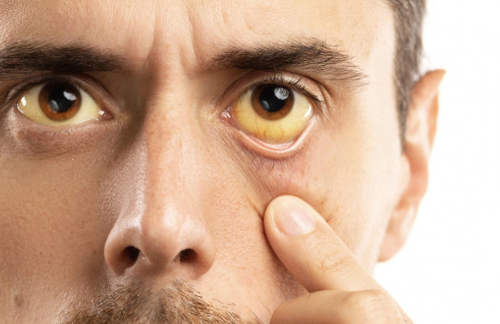

L'hépatite B est l'infection hépatique grave la plus répandue au monde. Elle est causée par le virus de l'hépatite B qui attaque et endommage le foie.Chaque année, jusqu'à un million de personnes meurent de l'hépatite B, bien qu'elle soit évitable et traitable. .
L'hépatite B se transmet par contact direct avec du sang ou certains liquides corporels infectés. Le virus se transmet le plus souvent d'une femme enceinte infectée à son bébé lors de l'accouchement, en raison des échanges sanguins entre la mère et son bébé. Il se transmet également par du matériel médical ou dentaire non stérile, des rapports sexuels non protégés, des aiguilles non stériles ou par le partage d'objets personnels tels que rasoirs, brosses à dents, coupe-ongles et bijoux corporels.
L'hépatite B est une « épidémie silencieuse » car la plupart des personnes infectées récemment ou chroniquement ne présentent aucun symptôme. Elles peuvent donc transmettre le virus à d'autres personnes sans le savoir et perpétuer la propagation silencieuse de l'hépatite B. Chez les personnes infectées chroniquement mais asymptomatiques, le foie est néanmoins endommagé silencieusement, ce qui peut évoluer vers une maladie hépatique grave comme la cirrhose ou le cancer du foie.
La bonne nouvelle, c'est que l'hépatite B est évitable et traitable. Un simple test sanguin permet de diagnostiquer une infection par le virus de l'hépatite B. Le dépistage est le seul moyen de savoir avec certitude si vous êtes infecté. Il existe un vaccin sûr pour prévenir l'hépatite B pour ceux qui ne sont pas encore infecté.
Il y a des traitements naturels efficaces permettent de gérer une infection chronique par le virus de l'hépatite B, le detruit complètement .
L'hépatite B et votre foie
Le foie est un organe si important que nous ne pouvons survivre qu'un ou deux jours en cas d'arrêt complet. Si le foie est défaillant, votre corps le sera aussi. Heureusement, le foie peut fonctionner même lorsque jusqu'à 80 % de sa surface est malade ou abîmée. C'est grâce à sa capacité étonnante à se régénérer – ou à se créer – à partir de cellules hépatiques saines encore existantes.
Si votre corps était une automobile, votre foie en serait le moteur. Il assure des centaines de fonctions vitales pour assurer le bon fonctionnement de tout :
Stocke des vitamines, du sucre et du fer pour aider à donner de l'énergie à votre corps
Contrôle la production et l'élimination du cholestérol
Élimine les déchets, les drogues et autres substances toxiques de votre sang
Produit des facteurs de coagulation pour arrêter les saignements excessifs après des coupures ou des blessures
Produit des facteurs immunitaires et élimine les bactéries de la circulation sanguine pour combattre l'infection
Libère une substance appelée « bile » pour aider à digérer les aliments et à absorber les nutriments importants
Il y a bien un traitement pour s'en sortir définitivement du l'hépatite B même si c'est chronique ce que les medecins n'ont pas le droit de vous dire parce que ce sont des traitements à l'aide des remèdes naturel.
À propos du virus de l'hépatite B
Le virus de l'hépatite B est un petit virus à ADN appartenant à la famille des « Hepadnaviridae ». Des virus apparentés de cette famille sont également présents chez les marmottes, les écureuils terrestres, les écureuils arboricoles, les canards de Pékin et les hérons.
Structure du virus de l'hépatite B
Le virus de l'hépatite B contient une enveloppe externe et un noyau interne.
L'enveloppe externe du virus est composée d'une protéine de surface appelée antigène de surface de l'hépatite B ou « HBsAg ». L'HBsAg peut être détecté par un simple test sanguin ; un résultat positif indique une infection par le virus de l'hépatite B.
Le noyau interne du virus est une enveloppe protéique appelée antigène de base de l'hépatite B ou « HBcAg », qui contient l'ADN du virus de l'hépatite B et les enzymes utilisées dans la réplication virale.
Cycle de vie du virus de l'hépatite B
Le virus de l'hépatite B (VHB) a un cycle biologique complexe. Il pénètre dans la cellule hépatique hôte et est transporté dans son noyau. Une fois à l'intérieur du noyau, l'ADN viral se transforme en un ADN circulaire fermé de manière covalente (ADNccc), qui sert de matrice à la réplication virale (création d'un nouveau virus de l'hépatite B). Le nouveau virus VHB est empaqueté et quitte la cellule hépatique, l'ADNccc viral stable restant dans le noyau où il peut s'intégrer à l'ADN de la cellule hépatique hôte et continuer à créer un nouveau virus de l'hépatite B. Bien que le cycle biologique ne soit pas entièrement compris, certaines parties de ce processus de réplication sont sujettes à des erreurs, ce qui explique les différents génotypes ou « codes génétiques » du virus de l'hépatite B.
Symptômes

Ces symptômes incluent notamment les douleurs abdominales, la fatigue chronique, le jaunissement des yeux, la coloration foncée des urines, les troubles intestinaux, le gonflement abdominal, ainsi que l’apparition de boutons d’origine hépatique, entre autres.
Chez certaines personnes infectées, le virus de l’hépatite B peut rester silencieux pendant de longues années. On parle alors d’un virus inactif ou en sommeil : il est présent dans l’organisme, mais ne provoque aucun symptôme apparent.C’est ça qui est le plus dangereux : lorsque le virus devient actif, les symptômes apparaissent automatiquement, souvent accompagnés d’effets inattendus
Ce n'est pas bon signe si on vous dit que le virus est inactif dans votre organisme, c’est pourquoi vous devez rapidement chercher une solution, et ce, le plus tôt possible
Prévention et Conseil
1. 💉 Vaccination
Le vaccin contre l’hépatite B est la meilleure prévention.
Recommandé dès la naissance ou à tout âge si non vacciné.
Il est sûr et très efficace (plus de 95 % de protection).
2. ⚠️ Précautions sexuelles
Utilisez systématiquement le préservatif avec de nouveaux partenaires.
Faites-vous dépister régulièrement si vous êtes sexuellement actif(ve) avec plusieurs partenaires.
3. 🩸 Évitez le contact avec le sang
Ne partagez jamais des aiguilles, seringues, rasoirs, coupe-ongles, brosses à dents.
Vérifiez l’hygiène et la stérilisation du matériel chez les tatoueurs, perceurs, salons de manucure.
4. 🏥 Dépistage
Si vous êtes à risque (contacts à risque, originaire d’une région où l’hépatite B est fréquente, professionnel de santé), faites un test de dépistage.
Cela permet de détecter l’infection même sans symptôme et de protéger les autres.
5. 👶 Prévention chez les nouveau-nés
Si la mère est infectée, il est urgent de vacciner le bébé à la naissance et d'administrer une immunoglobuline spécifique pour prévenir la transmission.
6. 🌍 Voyages à l'étranger
Si vous partez dans une zone à forte prévalence d’hépatite B, faites-vous vacciner avant le départ.
Évitez les soins médicaux non urgents ou les pratiques esthétiques dans des conditions douteuses.
---
🧑⚕️ Si vous êtes porteur du VHB
Évitez l’alcool, qui aggrave les lésions hépatiques.
Informez vos partenaires ou professionnels de santé si nécessaire.
Ne donnez pas de sang ni d’organes.
Traitement
Si vous êtes testé positif au virus de l’hépatite B pendant plus de 6 mois, cela indique que vous souffrez d’une infection chronique.
Nous mettons à votre disposition des traitements naturels d’une grande efficacité, capables d’éliminer définitivement contrairement aux traitements de l'hôpital
A l'hôpital les médecin vous prescriptent des antiviraux comme:
Ténofovir
Entécavir
Ces médicaments ne guérissent pas l'hépatite B, ils ralentissent la multiplication du virus.
L’hépatite B est une maladie virale grave qui touche des millions de personnes dans le monde depuis de nombreuses années, avec des conséquences parfois sévères sur la santé du foie.
À vous qui souffrez profondément de cette maladie, je vous propose une offre d’essai : deux boîtes de nos produits au tarif préférentiel de 50.000 francs CFA par boite. Cela vous permettra de constater par vous-même l’efficacité de nos solutions, à travers la disparition progressive des symptômes, jusqu’à l’élimination complète du virus.
Témoignages
Je m'appelle Rosine Djohoun
Je suis la preuve vivante qu’on peut guérir avec le sourire… et un petit coup de pouce de la nature !"
Il y a trois ans, on m’a diagnostiqué une hépatite B. C’était un choc. Je ne m’y attendais pas du tout : pas de symptômes, une vie bien remplie… et pourtant, le virus était là.
Heureusement, j’ai été bien entourée: une famille présente, et surtout, une découverte qui a changé ma vie : un produit naturel appelé Hepatomètre 🌿.
Sur recommandation d’un professionnel de santé, j’ai commencé à prendre Hepatomètre en complément de mon suivi médical. C’est un produit à base de plantes qui soutient le foie et aide à renforcer les défenses naturelles de l’organisme. Je l’ai intégré à une routine saine : alimentation équilibrée, zéro alcool, sommeil réparateur, sport doux… et beaucoup de pensées positives. 😊
Petit à petit, les analyses se sont améliorées. Mon foie allait mieux, je me sentais plus en forme, plus légère. Et aujourd’hui, bonne nouvelle : je suis guérie !
🙌 "La nature a été une alliée précieuse sur mon chemin de guérison."
"Quand on nous a parlé d’hépatite B, on a eu peur pour nous… et pour notre futur bébé. Mais grâce à Dieu, aux soins médicaux et au soutien de la nature, tout s’est bien terminé."
Histoire d'un couple
Nous sommes Yvette et Malik. Il y a deux ans, lors de nos essais pour avoir un enfant, nous avons découvert que j’étais porteuse chronique de l’hépatite B. Ce fut un vrai choc, surtout en pensant à la grossesse.
Heureusement,nous avons découvert un produit naturel à base de plantes, recommandé pour renforcer la santé du foie :
🌿 Hepatomètre
J’ai intégré Hepatomètre à ma routine, avec l'accord de mon médecin. Ce complément naturel m’a aidée à soutenir mon foie, à améliorer mes bilans de santé, et surtout à traverser cette période avec plus de sérénité.
Pendant la grossesse, j’ai été suivie de près. Et à la naissance, notre petite fille a reçu :
Le vaccin contre l’hépatite B immédiatement (dans les 12 heures),
Une injection d’immunoglobulines pour la protéger.
Aujourd’hui, je suis guérie, ma charge virale est indétectable, et notre fille est en parfaite santé. 💖
Nous voulons dire aux couples qui traversent cette épreuve :
ne perdez pas espoir, entourez-vous de bons professionnels, informez-vous, et explorez aussi les solutions naturelles sérieuses comme Hepatomètre, toujours avec un avis médical.
💬 "Aujourd’hui, nous sommes une famille heureuse. Et tout a commencé avec un peu de peur… et beaucoup d’espoir."
"Hepatomètre a été un vrai soutien naturel dans ce parcours." – Yvette